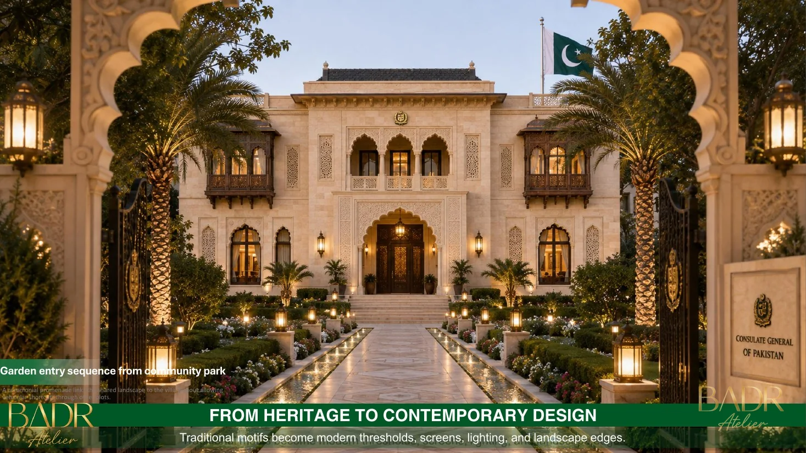
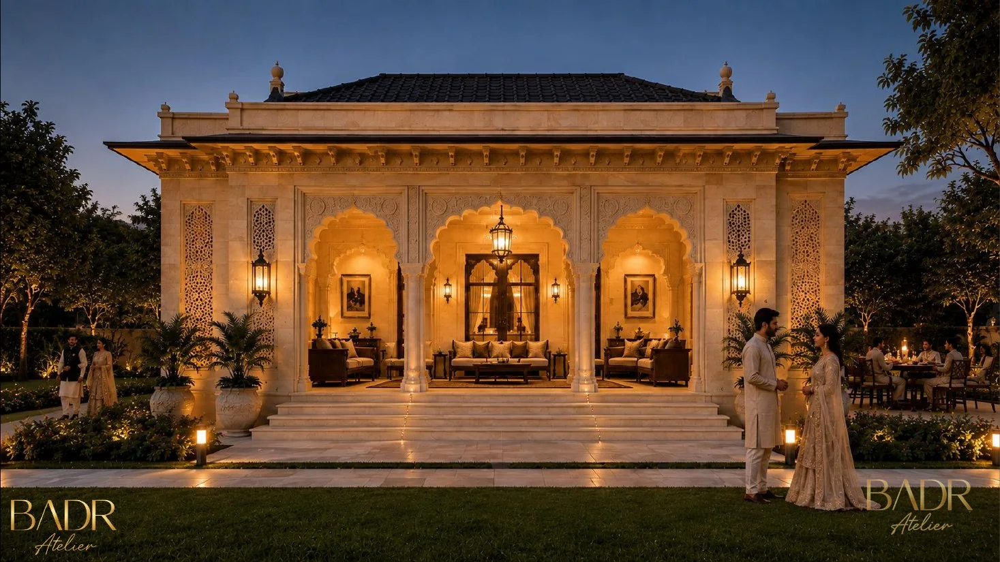
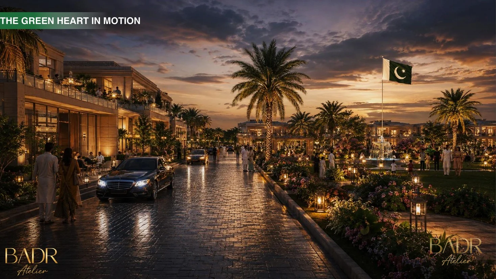

Residential Villas Cluster
Private family living arranged as a diplomatic residential layer around the main residence.
Curated portfolio chapterA curated diplomatic chapter that organizes the Pakistan diplomatic campus into clear portfolio layers: ceremonial arrival, main residence, residential villas, hospitality, landscape and BIM delivery.
The ceremonial main residence and the architectural face of the compound.
Open project page ↗Private family living arranged as a diplomatic residential layer around the main residence.
Curated portfolio chapterA ceremonial hospitality layer for receptions, gatherings and diplomatic hosting.
Curated portfolio chapterThe shared green heart that softens the compound and supports family, gathering and diplomacy.
Curated portfolio chapterA representative domestic chapter supporting official identity, stay and hospitality.
Curated portfolio chapterThe digital delivery chapter showing the building as connected information across its lifecycle.
Open BIM chapter ↗This index page expands the diplomatic work beyond a single hero page. It separates what the visitor needs to read quickly: the main residence, the campus housing, hospitality spaces, garden identity, and the BIM delivery layer.



The system is now ready to host future embassy or mission work under the same diplomatic portfolio language.
Residential and guest chapters can be extended cleanly without rebuilding the structure.
Reception, VIP and ceremonial content can be inserted as additional diplomatic capsules later.